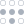

Domain & DNS
The fabricioporcelli.com.ar domain is registered at NIC Argentina and its DNS is delegated to Cloudflare. Cloudflare keeps the records, including the one that points subdomains to the tunnel.
// infrastructure
Home server running Ubuntu Server LTS where all my applications run in containers. Cloudflare publishes them to the internet without opening ports on the router, Traefik routes each subdomain to its container, and Tailscale gives me private admin access.
 Ubuntu Server
Ubuntu Server
 Docker
Coolify
Docker
Coolify
 Cloudflare
Traefik
Cloudflare
Traefik

TailscaleThe server runs the apps in containers and Cloudflare publishes them without opening anything on the router. A visit travels like this:
DNS (Cloudflare)
→
Cloudflare (HTTPS)
→
Tunnel (cloudflared)
→
Traefik
→
App container
The fabricioporcelli.com.ar domain is registered at NIC Argentina and its DNS is delegated to Cloudflare. Cloudflare keeps the records, including the one that points subdomains to the tunnel.
It plays several roles: domain DNS, HTTPS termination with free certificates, hiding the real IP, and basic attack protection plus caching.
The cloudflared container opens an outbound connection to Cloudflare. That's why no fixed public IP, port forwarding, or CGNAT workaround is needed.
Reverse proxy that reads each request's domain and routes it to the right container. It ships with Coolify, so new subdomains work without touching Cloudflare.
Self-hosted deployment platform: pulls code from GitHub, builds images, starts containers, and manages environment variables, databases, and domains.
Each app runs in an isolated container with its dependencies. Containers talk to each other by internal names within Docker networks.
Private network between my devices. I use it to reach the Coolify panel and SSH from anywhere; those endpoints are never published to the internet.

Terminal access secured with keys instead of passwords, with password login disabled.
Availability monitored with Uptime Kuma.